本手册中的每一个分值、每一条按钮路径，均按平台当前实现核对，并已用学生账号在真实环境逐项验证； 遇到"分数为什么和预期不一样"，先按第 12 章 FAQ 与附录 A 的交付前自检自查，再找老师核对。
读第 02、03 章：会登录、认得界面、知道实训主线要做什么。
按第 04 → 09 章顺序操作，每章末尾都有"验收点"，做完就能在报告里看到对应分数。
直接看第 10 章高分攻略：按"性价比"排序的冲刺清单 + 常见失分点。
19898800030），不是教师账号；② 能打开平台地址并看到登录页；
③ 登录后顶栏"链状态"显示 链运行中。任何一项不满足，请先看第 12 章 FAQ，不要硬做。
这不是模拟沙盘。你敲的命令、部署的合约、发放的能量，都会真实写进一条链（EVM 或 FISCO-BCOS 联盟链）， 并在实训报告里被服务端按真实行为数据重新计算。所以"做完"和"做对"都会被记录，"假装做"不会被认可。
三份生态合约就是这条业务链的"法律"：GreenEnergy · ERC20绿色能量代币，由联盟节点发行； PlantCertificate · ERC721植树证书，每份唯一、不可复制； EcoBadge · ERC1155生态勋章与骑行券，可批量铸造与流转。 兑换资产消耗的能量会回收到管理员国库并销毁，形成"发放 → 累积 → 兑换 → 流通 → 回收"的闭环。
| 阶段 | 你要做的事 | 主要平台模块 | 对应报告分 |
|---|---|---|---|
| 阶段 1 链底层搭建 | 用官方脚本生成 4 节点联盟链、核验证书与端口、接入控制台、部署能量代币 | 云桌面 · 搭链教程（10 步） | D 10 分 |
| 阶段 2 业务合约开发 | 阅读内置合约源码 → 编译 → 部署 ERC20/ERC721/ERC1155 → 调用接口 → 转账 | 合约 IDE · 合约管理 · 接口调试 · 能量钱包 | A 20 · B 15 H 5 · I 5 |
| 阶段 3 联盟治理与运营 | 切换 6 个联盟角色发放能量，兑换证书/勋章/骑行券，并在绿色资产市场挂牌成交 | 绿色低碳联盟链 · 绿色资产市场 | C 10 · E 10 F 10 · G 15 |
| 阶段 4 链上验证 | 用监听器和区块链浏览器回看自己的每一笔调用，确认链上真实生效 | 调用监听器 · 区块链浏览器 | 证据留存 （计入 B / D） |
SSO 学生账号（你的学号，如 19898800030）。决定你能看到哪些菜单、你的成绩归属。
顶栏"当前操作钱包"。登录后默认切到你的专属钱包（形如 stu:<你的ID>）。你写的每一条链上数据都挂在它下面。
在"绿色低碳联盟链"页选择：管理员 / 地铁 / 公交 / 单车 / 外卖 / 回收。角色 = 能量发行权，与钱包是两回事。
| 你操作的页面 | 平台会记下的数据 | 报告评分项 | 分值 |
|---|---|---|---|
| 云桌面 · 搭链 10 步 | 步骤完成标记、终端命令记录 | D | 10 |
| 合约 IDE | 编译通过的合约（含标准模板与自写） | A / I | 20 + 3 |
| 接口调试 | 函数调用与交易哈希 | H / I | 5 + 2 |
| 我的钱包 / NFT 市场 | 你本人钱包发起的转账、铸造、成交 | B / C | 15 + 10 |
| 绿色低碳联盟链 | 角色使用、能量发行、兑换与购卖 | E / F / G | 10 + 10 + 15 |
| 监听器 / 区块链浏览器 | 链上回执与事件监听记录 | 验证加分 | 证据留存 |
0xadmin 或同学的钱包，
之后产生的合约、能量、交易就不再计入你自己的报告。整份实训请始终使用"我的钱包"；
需要联盟角色权限时，用"选择角色"而不是"切换钱包"。当前版本已把“你的数据”收口为钱包候选集并集
（真实地址 / 用户 ID / stu: 别名 / 学号，见 7.3 说明）：旧版“做了不加分”的口径缺陷已不存在；现在成立的只是设计边界——换一个钱包就是换了一个业务主体，
所以一整份实训请固定用同一个钱包做完。
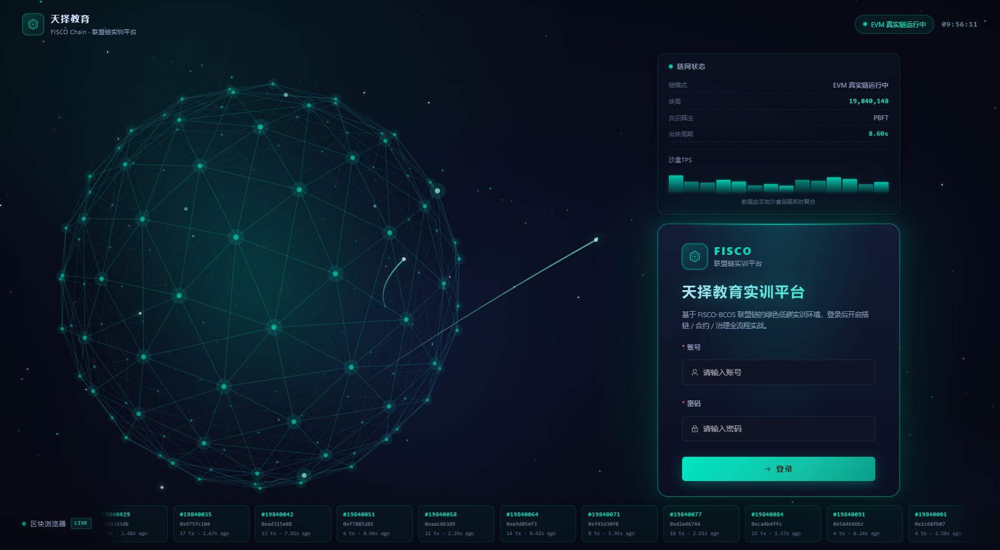
19,840,000 + 随机数 起步后自行 +1），不要用它判断链是否活着，真实块高看登录后的侧边栏与区块链浏览器。| 区域 | 作用 | 实训中你要看它什么 |
|---|---|---|
| 左侧导航 | 按 4 阶段分组：链底层搭建 / 业务合约开发 / 联盟治理与运营 / 链上验证 / 成就中心（组内有成就墙 · 挑战任务与我的成绩两项），底部固定"生成实训报告" | 实训顺序就是它的顺序；看综合分就走「成就中心 → 我的成绩」，不用手输网址 |
| 左下"当前链状态" | 引擎（EVM / FISCO / 沙盒）、块高、整体学习进度 | 块高在涨 = 链活着；这里的进度现在是你的真实进度（每 15 秒与切页时从后端拉一次），与总览页应一致 |
| 顶栏中部 | 当前阶段提示、快捷键（?）、生成实训报告入口 | 随时可一键跳报告 |
| 顶栏"当前操作钱包" | 下拉可切换"我的钱包"或联盟角色钱包 | 整份实训保持"我的钱包"（见 1.3） |
| 右上头像 | 姓名 / 角色 / 退出登录 | 换账号前先退出，避免数据写错钱包 |
总览页从上到下依次是：欢迎卡（实训进度 %、当前步骤、已部署合约数、链上交易数）→ 实训链状态 → 我的实训进度（10 步完成情况 + 学习行为数）→ 学习路径卡片（4 阶段 10 步，含每步目标与验收）→ 成就与积分。
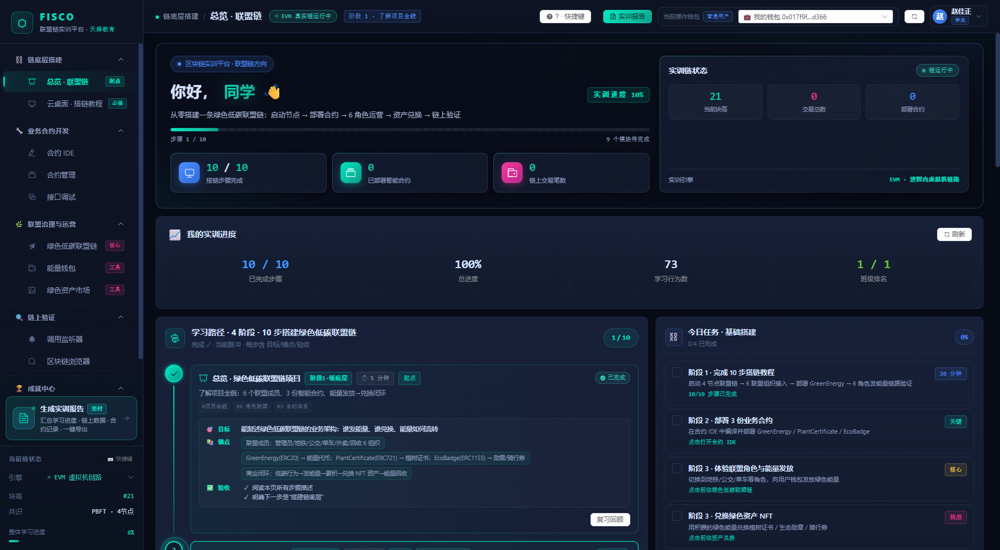
报告页把学习路径拆成 L1~L9 九个节点，每个节点直接对应一组分值。下表是"做什么 → 在哪个页面 → 拿多少分"的完整映射，也是你交作业前的自检表。
| 序 | 节点 | 关键动作（做到什么程度算完成） | 页面 | 分值 |
|---|---|---|---|---|
| L1 | 搭链教程 | 云桌面 10 步全部打勾（命令需按顺序逐条输入，粘贴被禁用） | 云桌面 | D 10 |
| L2 | 合约部署 | 至少部署 1 份；ERC20 / ERC721 / ERC1155 各 1 份才能拿满 | 合约 IDE | A 20 |
| L3 | 接口调试 / 真学 | 看内置源码 ≥3 次、真实编译 ≥1 次、接口调试调用 ≥1 次 | 合约管理 · 接口调试 | I 5 |
| L4 | ERC20 交易 | 转账 / mint / 授权累计满 10 笔链上交易 | 能量钱包 | B 15 |
| L5 | NFT 铸造与交易 | 铸造 ≥1 件 + 市场成交 ≥1 笔（绿色市场成交同样计入） | 绿色资产市场 | C 10 |
| L6 | 生态合约激活 | GreenEnergy / PlantCertificate / EcoBadge 三份都在链上可调用 | 合约管理 · 绿色低碳联盟链 | H 5 |
| L7 | 6 角色体验 | 依次选择管理员 / 地铁 / 公交 / 单车 / 外卖 / 回收（≥4 个拿 8 分，6 个 10 分） | 绿色低碳联盟链 | E 10 |
| L8 | 能量发放多样性 | 用 ≥3 种不同角色各成功发放 1 次能量 | 绿色低碳联盟链 | F 10 |
| L9 | 资产兑换多样性 | 兑换勋章 + 骑行券；兑换 ≥1（理想 2）种树种证书；发放角色 ≥4 | 绿色低碳联盟链 · 市场 | G 15 |
19898800030，姓名 赵佳正，班级 216）已把 A~I 九维全部做到满分：
报告 100 分・等级「卓越 🏆」・零扣分（基础 55/55 · 高级实战 40/40 · 综合拓展 5/5），
四维实训 100、教师评分 88、综合成绩 95.2，联盟运营微任务 10/10 服务端验收通过。
曾经堵死满分的 B 项口径（链上交易恒 0 分）已在本版本修好；G1 另有一个环境前置 ——
目录里要真的有 ≥ 2 个在售树种（全新空库会自动播种 2 个，旧库需老师补上架），
第 10 章给出按分值排序的最优拿分路径与实测轨迹。
云桌面 = 左侧教程步骤 + 右侧仿真终端。你在终端里逐条手敲该步骤要求的命令，全部通过后步骤自动打勾并计时； 命令顺序错误会提示"命令执行顺序错误"，语法错误会给出该步骤的语法格式提示（这就是你的"提示按钮"）。
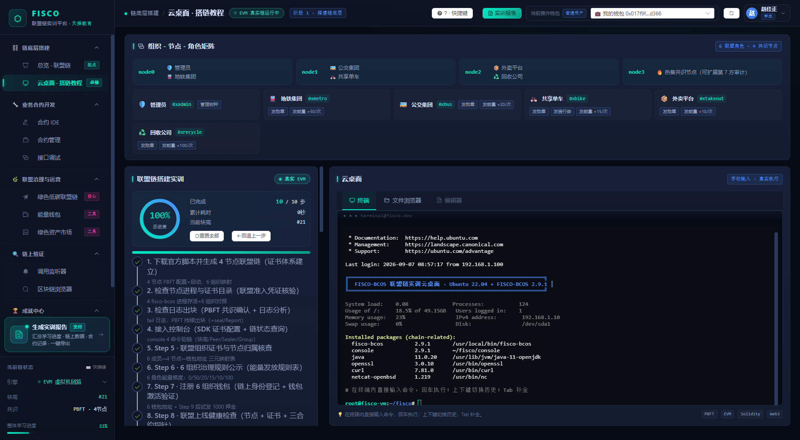
Ctrl+V，必须手敲。长命令请对照下方速查表逐字符输入，注意空格与冒号。cmd_idx），先做前一条才会通过后一条。下表直接取自服务端教程注册表（app/learning/tutorial_engine.py · TUTORIAL），与云桌面页左侧步骤卡逐条对应。
控制台类命令需带 [console] 前缀（表示已进入 FISCO BCOS 控制台交互态）；<address> 用页面上给出的真实合约地址替换。
| 步骤 | 要输入的命令（必须按此顺序，共 27 条） | 这一步在验证什么 |
|---|---|---|
| 1 5 条 |
$ curl -#LO https://github.com/FISCO-BCOS/FISCO-BCOS/releases/download/v2.9.1/build_chain.sh && chmod +x build_chain.sh $ bash build_chain.sh -l 127.0.0.1:4 -p 30300,20200,8545 -o nodes $ cat nodes/127.0.0.1/node0/config.ini | grep -E '^\[|node_listen|channel_listen|peer_listen' | head -20 $ cat nodes/127.0.0.1/node0/conf/group.1.genesis | head -30 $ bash nodes/127.0.0.1/start_all.sh |
官方建链脚本 → 一键生成 4 节点 PBFT 联盟链与完整证书体系（CA / 机构 / 节点 / SDK）→ 核对三类监听端口与创世块 → 启动节点 |
| 2 5 条 |
$ ps -ef | grep fisco-bcos | grep -v grep | wc -l $ ls nodes/127.0.0.1/ $ openssl x509 -in nodes/127.0.0.1/ca/ca.crt -noout -subject -issuer -dates $ openssl verify -CAfile nodes/127.0.0.1/ca/ca.crt nodes/127.0.0.1/node0/conf/node.crt $ nc -zv 127.0.0.1 30300 20200 8545 2>&1 |
联盟准入核验：进程数应为 4；产物目录 ca/agency/node0~3/sdk；CA 自签且未过期；节点证书能被 CA 验签通过；端口可达 |
| 3 4 条 |
$ tail -n 50 nodes/127.0.0.1/node0/log/log_* | grep -E '\+\+\+Generating|Report' $ tail -n 200 nodes/127.0.0.1/node0/log/log_* | grep -iE 'ERROR|WARN' | tail -5 $ tail -n 100 nodes/127.0.0.1/node0/log/log_* | grep -oE 'blk_num=[0-9]+' | tail -3 $ tail -n 100 nodes/127.0.0.1/node0/log/log_* | grep -oE 'hash=[a-f0-9]{64}' | tail -3 |
PBFT 共识确认：日志出现 +++Generating / Report = 正在出块；排错只看 ERROR/WARN；blk_num 递增、hash 连续 = 链健康 |
| 4 8 条 |
$ cp -r nodes/127.0.0.1/sdk/* ~/fisco/console/conf/ $ openssl x509 -in nodes/127.0.0.1/sdk/sdk.crt -noout -subject -dates $ openssl verify -CAfile nodes/127.0.0.1/sdk/ca.crt nodes/127.0.0.1/sdk/sdk.crt $ cd ~/fisco/console && bash start.sh [console] getBlockNumber · [console] getPeers [console] getSealerList · [console] getGroupPeers |
SDK 证书拷入控制台（控制台持证才能连链）+ 证书验签 + 四条链情命令：块高 / 对等节点 / 共识节点 / 组内节点 |
| 5 5 条 |
$ ls -la nodes/127.0.0.1/node0/conf/ $ cat nodes/127.0.0.1/node0/conf/config.ini | grep -E 'listen|peer|channel' | head -10 $ openssl x509 -in nodes/127.0.0.1/node0/conf/node.crt -noout -subject -dates $ openssl verify -CAfile nodes/127.0.0.1/ca/ca.crt nodes/127.0.0.1/node0/conf/node.crt [console] getNodeVersion |
组织证书与节点归属：node0~3 各自的 node.crt/node.pem 齐全、由联盟 CA 签发、版本一致 —— 这就是 6 组织能接入同一条链的原因 |
同样取自服务端教程注册表。Step 6–10 的语序仍然固定；标有「真实」的命令会真的落到链上（查余额、调合约、编译部署），
标有「教学」的命令输出为观测要点。表中的 <address> 与 <tx_hash>：原样照打即可通过（后端按链上最新实例与上一步回执解析），
你也可以替换成终端刚打印出来的真实值，两种写法都算对。
| 步骤 | 要输入的命令（必须按此顺序，共 29 条） | 这一步在验证什么 |
|---|---|---|
| 6 6 条 |
$ cat <<'RULES' [console] getAccountBalance 0xmetro [console] getAccountBalance 0xbus [console] getAccountBalance 0xbike [console] getAccountBalance 0xtakeout [console] getAccountBalance 0xrecycle |
第一条只需输入这一行 cat <<'RULES'，终端会原样公示 6 组织能量发放规则表（内容同 7.1 那张表）—— 治理规则透明可查；后 5 条是真实链上余额查询，5 个业务钱包能查到余额 = 已在链上登记 |
| 7 6 条 |
[console] getAccountBalance 0xadmin [console] getAccountBalance 0xbike [console] getAccountBalance 0xtakeout [console] getAccountBalance 0xrecycle [console] getAccountBalance 0xmetro [console] getAccountBalance 0xbus |
补上管理员钱包，6 / 6 组织链上身份登记闭环。全部为真实查询；顺序与第 6 步刻意错开，要求你逐账户核对而不是复用上一次输出。注意：FISCO 账户“首次查询即激活”，没有也不需独立的注册命令 |
| 8 6 条 |
$ bash nodes/127.0.0.1/check_node_status.sh all $ for i in 0 1 2 3; do echo "=== node$i ==="; openssl x509 -in nodes/127.0.0.1/node$i/conf/node.crt -noout -enddate; done $ for i in 0 1 2 3; do echo "=== node$i ==="; nc -zv 127.0.0.1 $((30300+i)) $((20200+i)) $((8545+i)) 2>&1; done [console] call GreenEnergy <address> name [console] call PlantCertificate <address> name [console] call EcoBadge <address> tokenURI 1 |
上线前健康检查三件套（节点状态脚本 / 4 张节点证书有效期 / 4×3=12 个端口连通，均为教学观测要点）+ 三份生态合约真实只读探针：能读到 name / tokenURI = 合约在链上可调用，这就是报告 H 项的口径 |
| 9 2 条 |
[console] deploy GreenEnergy 1000000 [console] getTransactionReceipt <tx_hash> |
真实编译 + 真实部署：终端会回显 contract address / transaction hash / gas used，再用回执确认 status: 0x1。注意这一步的部署方记为联盟管理员 0xadmin（系统级部署，同时同步 5 角色 mintRole 白名单、把平台流通货币切到新地址），不计入你的 A / B 项；你的 A / B 分要靠第 05、06 章亲手部署与转账 |
| 10 9 条 |
[console] call GreenEnergy <address> name [console] call GreenEnergy <address> balanceOf 0xlearner [console] call GreenEnergy <address> mint 0xmetro 0xlearner 50 地铁通勤≥10km [console] call GreenEnergy <address> mint 0xbus 0xlearner 20 公交出行≥5min [console] call GreenEnergy <address> mint 0xbike 0xlearner 15 骑行≥2km [console] call GreenEnergy <address> mint 0xtakeout 0xlearner 10 绿色外卖 [console] call GreenEnergy <address> mint 0xrecycle 0xlearner 100 回收≥1kg [console] getTransactionReceipt <last_mint_tx_hash> [console] call GreenEnergy <address> balanceOf 0xlearner |
商业化全链路验证（全部真实上链）：先读合约名与初始余额 → 5 个业务角色按规则向居民 0xlearner 发放 → 查最后一笔 mint 的回执（status: 0x1 + Transfer 事件）→ 再读一次余额对账。5 笔 mint 合计 +195 点。注意这 5 笔的发送方是机构角色钱包、入账方是演示居民 0xlearner，既不进你的 B 项，也不会加到你自己的能量余额 |
getAccountBalance、Step 8–10 的 call / deploy / getTransactionReceipt。
教学模拟（本地无 docker / FISCO 节点时降级展示观测要点）：Step 1–5 全部命令、Step 6 的 cat 规则表、Step 8 的节点脚本 / 证书 / 端口三条。响应会带 source: real / simulated 字段标真实来源。
这是平台已知的设计取舍，不影响步骤判定与 D 项得分，但写实训报告时应准确描述“哪一段仿真、哪一段真实上链”。
| 完成步数 | D 项得分 |
|---|---|
| 10 / 10 | 10 |
| ≥ 5 / 10 | 6 |
| ≥ 1 / 10 | 2 |
| 0 / 10 | 0 |
平台鼓励"试错式学习"：搭链过程中的失败尝试计入学习质量维度 —— 失败 1 次 +1、2 次 +2、≥3 次 +3。
要点：探索加分只在 D 项加满 10 分之前有意义。教程做到 10/10 时 D 已封顶，再刻意制造失败收益恒为 0，报告也不会再提示这一项；只有「进度 ≥ 3 步、一次都没失败过、且 D 距封顶还差分」时，报告页的「学习建议与提升路径」区才会出现 D 搭链探索 条目，并写明你当前真实可再得的分值。
x/10 分。四者一致才算数。
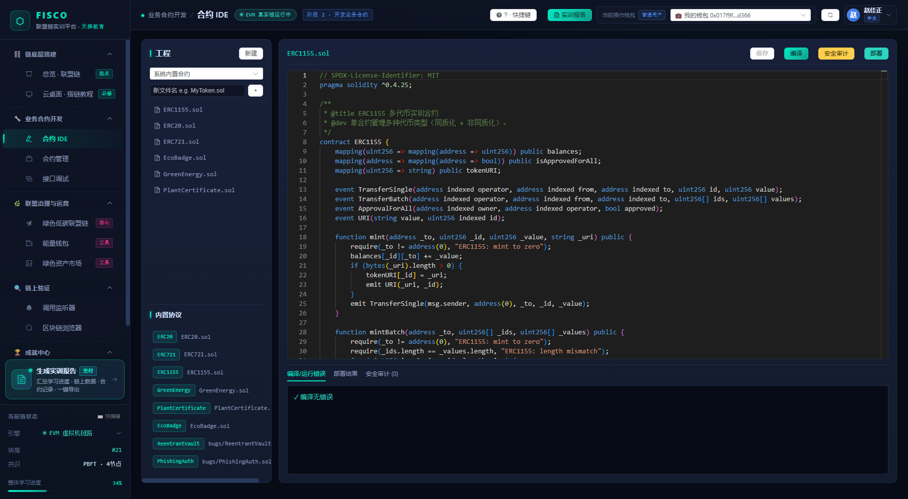
进入合约管理可见"已部署合约"列表（合约名 / 地址 / 标准 / 部署者 / 交易哈希 / 部署时间），支持按 ERC20 / ERC721 / ERC1155 / 自定义筛选。 H 项只看三份生态合约是否在链上可用：GreenEnergy、PlantCertificate、EcoBadge 三份齐全 = 5 分，2 份 = 2 分，1 份 = 1 分。
0xadmin），不计入你的 A 项。
A 项按"部署者 = 你的钱包候选集"统计，所以必须亲手编译并部署三份标准合约。
两者口径不同与 A 项相反，H 项是全局链上事实：只要链上存在 GreenEnergy / PlantCertificate / EcoBadge 三份合约（平台播种、
或搭链教程 Step 9 的系统级部署即可完成），H 项就给你 5 分，不需要你为 H 额外部署一次。
name / symbol / balanceOf）执行一次 —— 完成 I-2 +2 分。transfer / approve / mint）发起交易 —— 同时为 B 项累积交易笔数。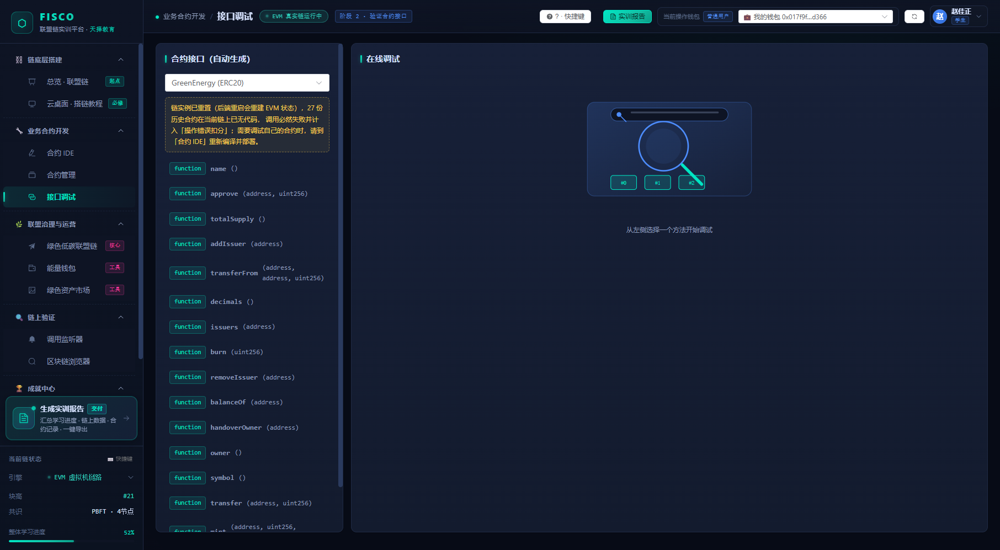
这两页是"造交易"的主战场：报告里的 B 项（链上活跃度）只看一件事 —— 链上交易里发送方 / 收款方 / 合约地址命中你钱包候选集的有多少笔，实践上就是「你本人钱包发起的那些交易」。
stu:<你的ID>）。0xmetro / 0xbus / 0xlearner，也可写给自己的另一个地址）、金额，确认发起交易。transfer / approve / mint，
或在市场买下一次、在联盟页兑换一次（扣能量的那笔 transfer 由你发出）—— 都计入同一笔数。
实测样本：13 笔 transfer + 5 笔合约部署 + 1 笔 NFT 铸造 = 19 笔，发送方清一色是你本人钱包 → B 项 15/15。mint 的发送方是机构角色钱包
（0xmetro 等）而不是你，所以不进 B 项；它的价值在 E / F / G 项与四维「能量发放」。B 项只能靠你自己钱包发起的交易。0xadmin，学生钱包直接调用 mint 会被拒绝，这是预期行为，不要误当作故障。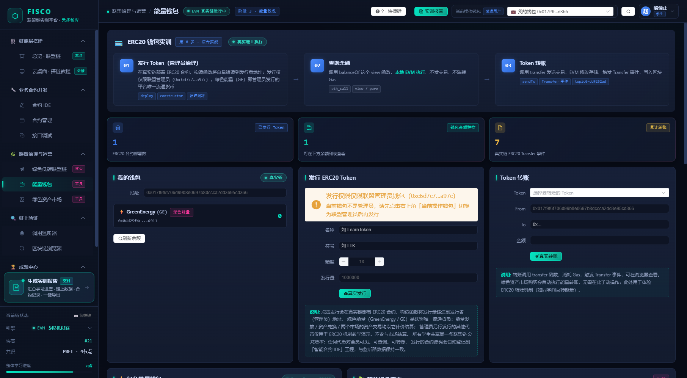
| 你的链上交易笔数 | B 项得分 | 怎么凑够笔数（都算） |
|---|---|---|
| ≥ 10 笔 | 15 | 钱包转账、合约 deploy、写函数调用（transfer / approve / mint / exchange / 挂牌 / 购买）—— 全部计入 |
| ≥ 5 笔 | 10 | 只走完合约部署 + 少量调用大约落在这档 |
| ≥ 2 笔 | 5 | 部署 3 份合约通常已≥ 2 笔 |
| ≥ 1 笔 | 2 | 至少部署过一次合约 |
| 0 笔 | 0 | 从未发起过任何真实交易 |
transactions 表只存真实 0x 地址，而登录态里还有用户 ID、stu: 别名与学号。
报告聚合现在按钱包候选集取并集，所以你用 0x017f…d366 发的那 19 笔能完整回到你名下（实测 B 项 15/15）。
如果你发现 B 项仍为 0，先确认两件事：① 你记得的那些交易确实是你本人登录时发的（不是借了同学账号）；
② 到区块链浏览器按地址搜你自己的钱包，看发送方交易数是否 > 0（第 08 章）。两边不一致再找老师。
mint）—— C 项 +5 分。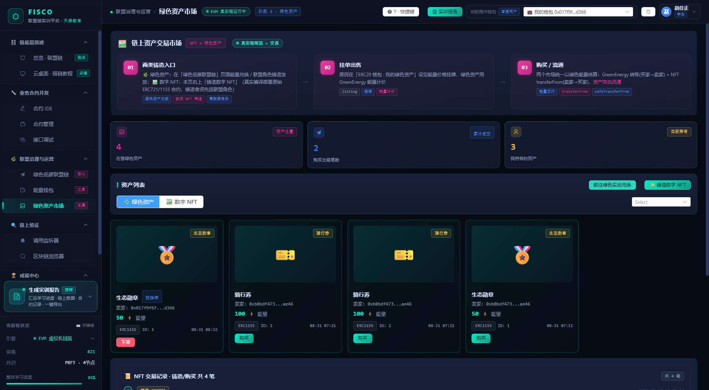
这一章是"联盟治理"的核心体验：换角色 → 用角色的发行权给居民发能量。 平台会记录你实际切换并使用过的角色数（E 项）与各角色的操作次数（F 项）。
下表取自 GET /api/eco/roles。能量不是“一个角色一个固定价”，而是
基础分 + 按量加成、单次封顶；每个发行节点还有自己的授信额度（只能上调不可下调）。
| 联盟角色 | 触发门槛（需提交凭证） | 能量算法 | 节点授信 |
|---|---|---|---|
管理员 0xadmin | — | 不发行能量；只签发植树证书、管理树种目录与额度、运营能量国库与销毁 | — |
地铁集团 0xmetro | 进站口 / 出站口 / 进站时间 / 里程 ≥ 10 km（单号 trip_no） | 基础 50，每超 1 km 再 +2，单次封顶 150 | 5000 |
公交集团 0xbus | 公交线路 / 上车时间 / 时长 ≥ 5 min（单号 trip_no） | 基础 20，每超 1 分钟再 +1，单次封顶 60 | 5000 |
共享单车 0xbike | 骑行订单号 / 里程 ≥ 2 km（时长可选） | 基础 15，每超 1 km 再 +3，单次封顶 60；它同时是骑行券的唯一发行方 | 5000 |
外卖平台 0xtakeout | 外卖订单号 + 必须勾选「无需餐具」 | 开关型行为：每单固定 10，不按量加成，同一订单不重复发放 | 3000 |
回收公司 0xrecycle | 回收单号 / 回收物分类 / 重量 ≥ 1 kg | 基础 100，每超 1 kg 再 +20，单次封顶 500（填 21 kg 即拿满 500） | 8000 |
FROM 都是机构钱包，但操作人会落库到你的登录身份（可审计）。
0xmetro 等会被拒，防止发行方自铸）。balanceOf 一致。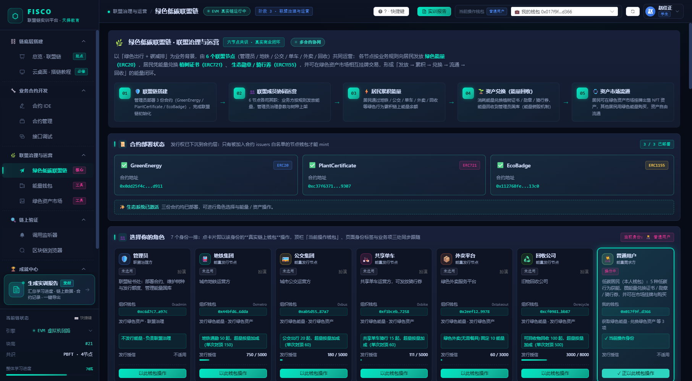
| 使用过的联盟角色数 | E |
|---|---|
| 6 / 6 | 10 |
| ≥ 4 | 8 |
| ≥ 2 | 5 |
| ≥ 1 | 2 |
| 治理操作分布 | F |
|---|---|
| 覆盖 3 种角色并有实质操作 | 10 |
| 覆盖 2 种角色 | 6 |
| 仅 1 种角色且 ≥ 3 次操作 | 3 |
真实地址 / 用户 ID / stu: 别名 / 登录账号（例：本报告 identity.wallet_candidates 就包了这 4 个写法）。
因此角色切换、能量发放、兑换、转账、NFT 铸造与成交都能正常回收到你名下。
但仍然成立的一条：行为按操作人归属。如果你拿同学的账号登录后操作，那部分数据会计到同学的报告里。
G 项考察你能不能把一条业务链真的"运转起来"：发能量 → 攒能量 → 兑换资产 → 资产回流。它是报告里分值第二高（15 分）却最容易被忽视的一项。
| 兑换标的 | 单价 | 要拿满分需兑换 | 拿分对应 |
|---|---|---|---|
| 植树证书·银杏（ERC721） | 1000 | 1 份 | G1：覆盖 ≥ 2 个树种才能拿 8 分 |
| 植树证书·水杉（ERC721） | 1500 | 1 份 | G1：第二个树种（只换银杏只有 4 分） |
| 生态勋章（ERC1155） | 10 | 1 枚 | G2：勋章与骑行券都换过才满 4 分 |
| 骑行券（ERC1155） | 20 | 1 张 | G2（仅共享单车节点发行、也由它兑付） |
| 发放角色覆盖 | — | ≥ 4 个角色 | G3：以 ≥ 4 种角色完成发放 +3 |
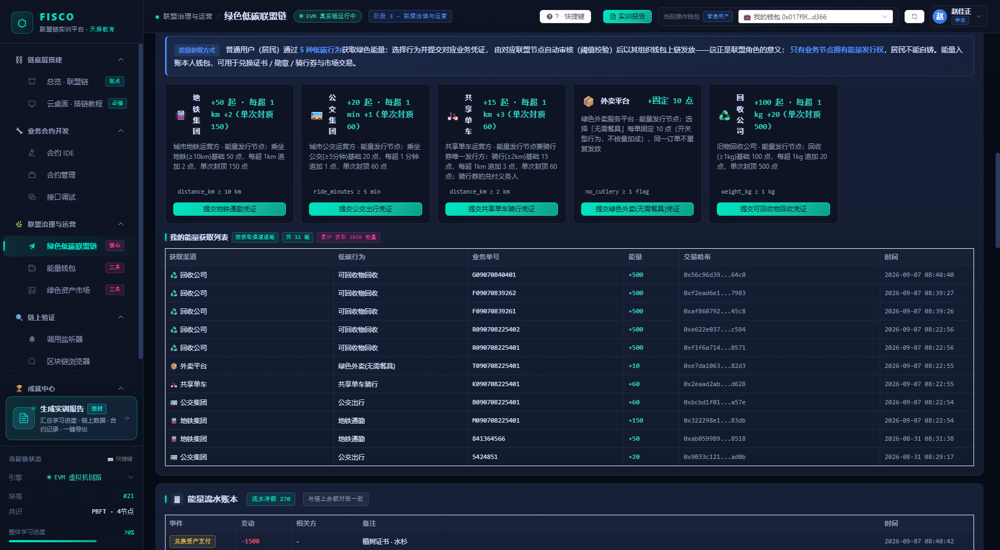
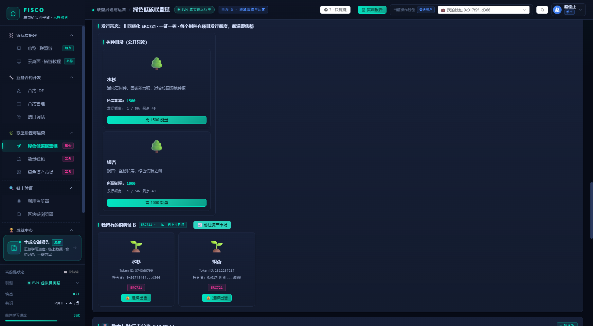
| 子项 | 条件 | 得分 | 现状提醒 |
|---|---|---|---|
| G1 | 兑换植树证书：覆盖 2 个及以上树种 8 分；仅 1 个树种 4 分；未兑换 0 分 | 8 | 本环境已有银杏 + 水杉两个树种，8 分完全可得（前提：能量≥ 2500） |
| G2 | 勋章与骑行券都兑换过 4 分；只其中一种 2 分 | 4 | 很容易拿满，两个按钮各点一次（共 30 能量） |
| G3 | 使用 ≥ 4 种角色完成能量发放 | 3 | 与 E 项复用同一批操作 |
前面 7.1~7.6 的动作很多，平台把它们拆成 10 个 3~5 分钟可交付的小任务，放在总览页右栏的任务卡里。 它不另算分，但它是你“还剩哪一步没做”的实时清单 —— 因为打勾不是你自己点的，是服务端查你的真实数据定的。
任务清单的权威源在服务端（app/missions_data.py，接口 GET /api/missions/curriculum）；
下表的“实测验收结果”列是账号 19898800030 的真实返回原文，不是示例文案。
| 任务 | 要做什么 | 服务端靠什么判定（验收依据） | 实测验收原文 |
|---|---|---|---|
| T1 | 切到管理员，激活 3 份系统合约 | deployed_contracts：GreenEnergy / PlantCertificate / EcoBadge 三份齐 | “3/3 份系统合约已部署激活” → H 5 分 |
| T2 | 6 个联盟角色各切换一次 | learning_events（eco_role_switch）：切换过全部 6 个角色 | “已切换体验 6/6 个联盟角色” → E 10 分 |
| T3 | 地铁角色发放（通勤 ≥ 10 km） | eco_energy_records：metro 向你的钱包发放 ≥ 1 次 | “地铁角色已向本钱包发放 2 次能量” → F 起步 3 分 |
| T4 | 公交角色发放（≥ 5 min） | bus 发放过 且累计 ≥ 2 种角色向你发放 | “bus 已发放 2 次 · 角色多样性 5/2 种” → F 6 分 |
| T5 | 单车角色发放（≥ 2 km） | bike 发放过 且 角色多样性 ≥ 3 种 | “bike 已发放 1 次 · 角色多样性 5/3 种” → F 10 分满 |
| T6 | 外卖角色发放（勾选无需餐具） | takeout 发放过 且 多样性 ≥ 4 种 | “takeout 已发放 1 次 · 角色多样性 5/4 种” → G3 +3 |
| T7 | 回收角色发放（重量 ≥ 1 kg） | recycling 发放过 且 metro/bus/bike/takeout/recycling 5 种全齐 | “recycling 已发放 5 次 · 角色多样性 5/5 种” |
| T8 | 兑换植树证书，且 ≥ 2 个树种 | eco_certificates：本钱包兑换过 ≥ 2 种不同树种 | “已兑换 2 种树种的植树证书（需 ≥ 2 种）” → G1 8 分 |
| T9 | 勋章 + 骑行券各兑换 1 次 | eco_badges：badge 与 voucher 两类都持有 | “已兑换 2/2 类绿色资产（勋章 / 骑行券）” → G2 4 分 |
| T10 | 生成并查看实训报告 | learning_events（report_view）：≥ 1 次 | “已生成 / 查看实训报告 35 次（需 ≥ 1 次）” → 交付动作 |
阶段四不直接占一个分值，但它是你把“做过”变成“可证”的唯一手段：报告里的每一个分数都应能在这两页找到对应的交易哈希与回执。
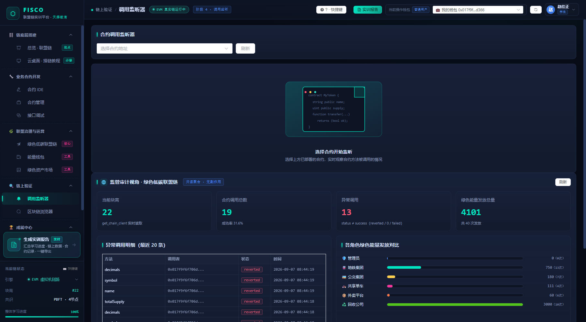
name / decimals 等
只读查询的失败；而报告的 P 项只读「绿色低碳联盟链」页的操作审计日志（见 9.3）。两者是完全不互通的两套数：
实测某账号监听器里累计 13 笔异常调用、成功率 31.6%，而这些 reverted 全部来自链重置后已作废的旧合约地址，
同账号报告的 P 项扣分仍为 0。
所以：看到“异常调用”很高不要慌，先按 9.3 确认 P 项；真正的风险是在失效地址上空转（浪费点击且不产生任何分），
处理办法见 5.3：“已失效”标记的合约直接跳过，去重新部署一份。
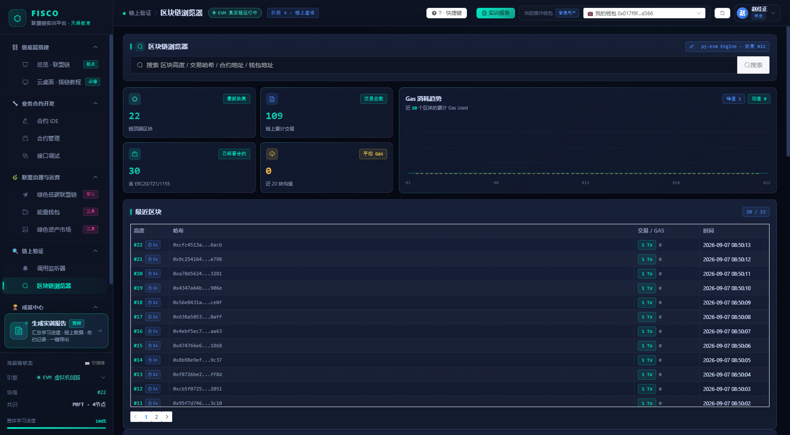
沙盘是一条链真实运行时的“故障演习”：教师注入一个线上故障（节点宕机 / 共识停滞 / 凭证重放 / gas 飙升）， 合成负载真的往链上打交易，你们比的是多快定位、多快对症处置。它考的是运维能力，不进九维报告、也不进四维实训分。
| 故障场景 | 现象（你在页面上看到什么） | 对症处置动作（命中才推进处置率 / 结算 MTTR） |
|---|---|---|
💥 节点宕机 node_down | 故障横幅指出哪个节点离线（node0~3），监控页与云桌面均可读取故障态 | 重启节点 |
⏸️ 共识停滞 consensus_stall | 出块暂停标记，负载生成器同步停止注入（链面看不到新交易） | 重启节点 或 修复重部署 |
🎭 凭证重放攻击 replay_attack | 能量流水里多出两条相同单号、不同角色的可疑记录，等审计方检出 | 重放审计 |
⛽ gas 飙升 gas_spike | 启动时一次性合成 1~40 笔（默认 12）小额转账抬高 gas 均值 | 修复重部署 或 交易限流 |
可选动作共四种：重启节点 / 重放审计 / 修复重部署 / 交易限流。 页面的「提交处置动作」下拉默认已帮你选中当前场景的第一个对症动作，下方一行蓝字会写明“对症动作：…”； 说明框≤ 200 字（建议写上你看了哪个指标、为什么选这个动作，教师抽查时看的就是这一列）。
| 指标 | 服务端定义 | 你想拿好看的成绩，应当怎么做 |
|---|---|---|
| MTTD | 故障注入（≈轮次启动）→ 首个处置动作的秒数 | 开工就盯着横幅，先提交一个动作抢下 MTTD（哪怕动作不对症） |
| MTTR | 故障注入 → 首个对症处置动作的秒数；未对症恢复记为 — | 看清“对症动作：”那一行再提交，选错只计 MTTD 不降 MTTR |
| 处置率 | 已提交的对症动作种类数 ÷ 该场景应有种类数 × 100 | 共识停滞与 gas 飙升有两个对症动作，两个都交才能 100% |
| 交易成功率 | 合成负载成功笔数 / 尝试笔数（指标名下方的小字直接写着「合成负载 成功/尝试」） | 这一项不由你的动作控制：它只反映故障期间链的健康度（实测本环境 15~16/16 ≈ 100%）， 看到它低于 100% 并不是你们做错了什么，而是链上确实有转账被拒（本版已修复一处让该指标恒为 0% 的地址解析缺陷） |
记分板每 10 秒采样一次（服务端定时推 sandbox_kpi 事件），所以提交完不会立刻跳数，等一个周期。
右侧「处置流水」按 +秒数 · 动作 · 操作人姓名 · 说明 逐条列出全班动作，这是你查“谁抢先了”的唯一窗口。
需要特别说明：处置动作只影响时间类指标（MTTD / MTTR / 处置率），它不会真的重启节点、也不会改变负载注入速率 ——
它是一个“你在正确时间做了正确判断”的演习凭证。
stopped，场景状态从「待启动」变「已演练」，节点故障标记自动恢复。
这就是本手册推荐的完整路径：建景 → 启动 → 处置 → 自然结束（或教师「⏹ 一键停止」）。
ops_scenarios / ops_rounds / ops_kpis），所以演练做得好坏不会动你的九维分。
但合成负载是真上链的小额转账（发送方 0xlearner → 收款方 0xadmin，每笔 1），
所以监听器与区块链浏览器里会多出成批不属于任何同学的交易 —— 它们不计入你的 B 项（B 项只按你的钱包候选集取数），
写实训心得时也不要把它当成“自己发了多少笔”。
报告是整份实训的交付物。它不是你自己填的表格，而是服务端拿着你的真实行为重新算出来的一份评分书。
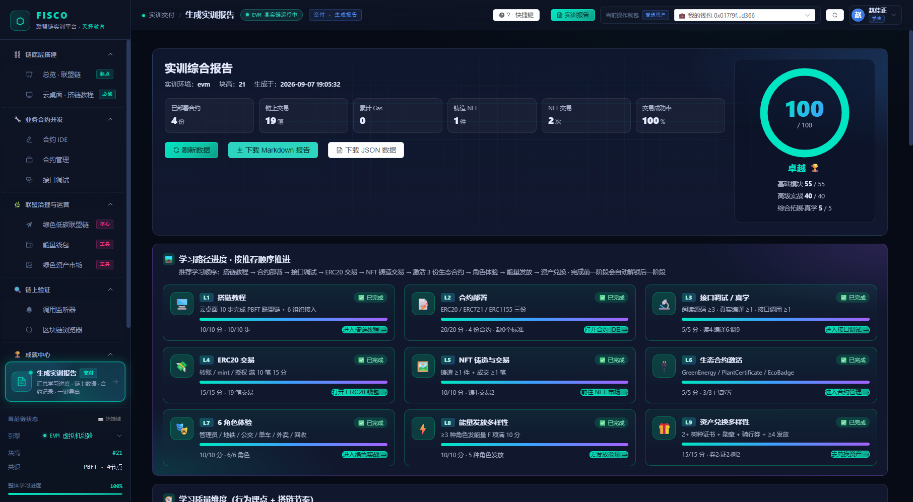
| 维度 | 名称 | 满分 | 一句话拿分条件 |
|---|---|---|---|
| A | 合约开发 | 20 | 部署 ≥1 份得 10；再按 ERC20 +3 / ERC721 +3 / ERC1155 +4 叠加 |
| B | 链上活跃度 | 15 | 真实交易 ≥10 笔拿满（阶梯：1 / 2 / 5 / 10 笔） |
| C | 资产生命周期 | 10 | 铸造 ≥1 得 5 + 成交 ≥1 得 5 |
| D | 链搭建完成度 | 10 | 云桌面 10/10 步得 10；步骤分 + 探索加分合计封顶 10（不再有“10+3=13”的算法） |
| E | 联盟角色覆盖 | 10 | 6/6 角色都用过 |
| F | 治理深度 | 10 | ≥ 3 种角色有实质操作 |
| G | 绿色经济运营 | 15 | G1 证书 8 + G2 勋章&骑行券 4 + G3 发放角色 3 |
| H | 生态合约激活 | 5 | GreenEnergy / PlantCertificate / EcoBadge 三份齐全 |
| I | 学习质量 | 5 | I1 读源码≥3次 +2、真实编译≥1 +1（上限 3）；I2 接口调试≥1 +2 |
| 级别 | 算法 | 封顶 |
|---|---|---|
| 操作 error | 每次 −1 | −10 |
| 操作 warn | 每 10 次 −3 | −5 |
| 两项合计 | — | −15 |
只统计「绿色低碳联盟链」页的操作审计日志：能量发放被拒、兑换余额不足、 挂牌 / 购买失败、未选角色就操作、上架树种不合规等。合约 IDE 编译失败、接口调试 reverted、NFT 页 403 都不在里面（该口径已收口）。
日志按操作者归因：统计的是你本人发起的那些操作， 别人以角色身份给你发能量时的失败不会扣到你头上。实测账号 21 条日志、error 0 / warn 0 → 扣分为 0。
| 总分 | 等级 | 色值 |
|---|---|---|
| ≥ 90 | 卓越 🏆 | #00e6c3 |
| 80 – 89 | 优秀 🥇 | #2dd4bf |
| 70 – 79 | 良好 🥈 | #4d8dff |
| 60 – 69 | 合格 ✅ | #ffcf4d |
| 40 – 59 | 待完善 🚧 | #ff9500 |
| < 40 | 未完成 ❌ | #ff5470 |
总分先按 A~I 相加，再减 P 项，最后 max(0, …)；所以九维做满 100 且零扣分即为最高档「卓越 🏆」。
这六档由服务端 app/score_levels.py 单点定义，报告页、成绩页与 Markdown 报告共用同一张表
（本版本已统一，旧版「≥ 90 叫优秀」与「90 分给 🏆」两套说法并存的问题已消除）。
| 看到的现象 | 结论与动作 |
|---|---|
| B 项 = 0，但浏览器里能看到自己的交易 | 先确认那几笔交易确实是你本人登录时发起的；再刷新报告。当前版本按钱包候选集取并集，仍为 0 就带浏览器截图找老师 |
| E / F / G / I 全为 0，而你确定做过 | 几乎都是登录账号不是同一个（数据按操作人归属）。到报告 JSON 的 identity.wallet_candidates 核对四个写法，看是不是你自己的 |
| 教程步骤显示「28/10 步」、合约数大得不合理 | 你看到的是全局混合口径（教师 / 管理员不指定钱包时的默认视图）。学生登录自己的账号只会看到本人数据 |
| 出现「P 操作错误扣分 −N」 | 到联盟页操作日志 / 审计概览按本人筛，定位 error 的原因（多为能量不足 / 未选角色 / 凭证未达阈值）。error 行不会因后续成功而消失、也无法删除，所以重点是停止重复同一个失败动作，而不是反复重试 |
| 刚做完操作但分数没变 | 没点刷新数据。报告不会自动重算 |
| 报告 100，「我的成绩」却是 95.2 | 正常（两套体系，见第 11 章）：综合分 = 实训分 × 60% + 教师分 × 40% |
下面这张表把 100 分拆成"每个动作值多少分 / 花多少时间"。时间不够时，从第一行往下做，做到哪算哪； 全部做完就是本手册实测过的成绩：A20 · B15 · C10 · D10 · E10 · F10 · G15 · H5 · I5 = 100 分，扣分 0 （一个真实账号的实际轨迹：19 笔链上交易、11 笔能量发放、6/6 角色、两个树种各 1 份证书）。
| 优 | 动作 | 得分 | 耗时 | 为什么划算 |
|---|---|---|---|---|
| 1 | I 项：读 3 份源码 + 编译 1 次 + 接口调试调 1 次只读函数 | 5 | 5 分钟 | 全平台最便宜的分，而且本来就该做 |
| 1 | H 项：确认三份生态合约链上可用 | 5 | 1 分钟 | 平台播种 + 教程 Step 9 已凑齐，你只需在联盟页看一眼 3/3 |
| 1 | A 项：依次部署 ERC20 / ERC721 / ERC1155 | 20 | 20 分钟 | 三份下去就是 10 + 3 + 3 + 4，一步拿满 |
| 1 | D 项：云桌面把 10 步全部打勾 | 10 | 30 分钟 | 命令有速查表；Step 8–10 的真实探针会顺手凑齐 H 项，但那些交易记在 0xadmin 与机构钱包名下，不进你的 B 项 |
| 2 | E / F / G3：6 个角色各切换一次，其中 ≥ 4 种角色各成功发放 1 次 | 23 | 20 分钟 | 一批操作同时喂饱三项（10 + 10 + 3）；发放时把接收方选成自己的钱包，还能同时喂四维「能量发放」 |
| 2 | G2：勋章 + 骑行券各兑换 1 次 | 4 | 2 分钟 | 只花 30 能量，成本几乎为零 |
| 3 | C 项：铸造 1 份 + 市场成交 1 笔 | 10 | 10 分钟 | 铸造会顺带为你部署一份 ERC721/1155；成交买系统挂牌资产最快 |
| 3 | G1：兑换 2 个不同树种的植树证书各 1 份 | 8 | 15 分钟 | 需 2500 能量：用回收角色重量填 21 kg 发 6 笔（单笔封顶 500）最快 |
| 4 | B 项：核对链上交易 ≥ 10 笔 | 15 | 0–10 分钟 | 走完上面几步，交易数通常已 ≥ 15 笔；不够就在能量钱包里补转账 |
| 5 | 控住 P 项：只在联盟页规范操作、失败不反复重试 | 最多 −15 | — | 不丢分就是最稳的涨分 |
九维全满 + 零扣分，等级「卓越 🏆」。本版本已修掉曾经堵死满分的 B 项交易归属口径。
优先级 1、2 全做完就到「良好」，且不依赖能量与树种供给，适合时间紧张时保底。
G1 的 8 分需要目录下真有 ≥ 2 个在售树种：空库首次启动会自动播种 2 个，旧库常只剩 1 个，需教师 / 管理员上架（见教师手册 3.3）。
| 课时 | 内容 | 阶段末自检 |
|---|---|---|
| 第 1 课时 | 登录 → 看总览 → 云桌面 Step1–10（D 项）→ Step8–10 的真实调用顺手凑齐 H 项；B 项不在这里，留到第 2 课时 | D = 10、H = 5 |
| 第 2 课时 | 合约 IDE 读源码 + 编译 + 部署 3 份标准合约（A / I）→ 接口调试一轮（I）→ 能量钱包转账凑笔数（B）→ 市场铸造与成交（C） | A = 20、I = 5、C = 10 |
| 第 3 课时 | 联盟页 6 角色发放（E / F / G3）→ 攒能量换 2 树种证书 + 勋章 + 骑行券（G1 / G2）→ 监听器与浏览器留证据 → 刷新并导出报告 | E = 10、F = 10、G = 15 |
0xadmin 或同学钱包做操作，那一段数据就归到对方名下；② 看错页：把"我的成绩"的四维实训分与报告的九维分当作同一个数（它们算法完全不同，见第 11 章）；
③ 只认一个页面：侧边栏的"整体学习进度"现在已是你的真实进度（每 15 秒与切页时刷新），但它只算搭链教程步数，不等于报告的九维总分 —— 交作业以报告页为准。
19898800030：实训分 100.0、教师分 88.0 → 综合分 95.2；同一份实训若教师分为 0，只能记 60.0。
所以做完实训后，一定要走到第 11.3 节的三段链路里，请老师在成绩录入里给你打分，否则九维报告做得再满，总评也上不去。
| 体系 | 在哪里看 | 算的是什么 |
|---|---|---|
| 实训报告（九维 A~I） | 生成实训报告 | 覆盖度评分书：每一项只看你有没有做到那个门槛（≥1 份 / ≥10 笔 / 6 角色…），达到就给满分，再减 P 项扣分。它是你提交给老师的作品 |
| 成绩册（四维实训分） | 我的成绩（侧边栏成就中心 → 我的成绩） | 次数 × 系数的过程分：链搭建 20% + 合约开发 30% + 链上验证 25% + 联盟治理 25%，每一维 100 分封顶，加权得到“实训分”，再与教师评分按 60/40 合成综合分 |
两套体系的算法与取数事件都不同：报告看“做没做到”，成绩册看“做了多少次”。
| 维度（权重） | 服务端公式 | 最快顶到 100 的做法 |
|---|---|---|
链底层搭建 chain_setup20% | IDE 打开模板 ×5 + 保存工程 ×10 + 教程完成步 ×8 | 云桌面 10 步就是 80 分；再在合约 IDE 里打开 2 个内置模板（10）+ 保存 1 次（10）→ 满 |
合约开发 contract_dev30%（最高） | 编译成功 ×5 + 部署合约 ×25 | 部署 4 份就满（或 3 份 + 5 次成功编译）。编译失败不扣分，只是不计次；权重最大，优先保它 |
链上验证 chain_verify25% | 接口调用 ×5 + 合约调用 ×4 + 链上交易 ×3 | 这一维最容易被忽略：它要的是真实调用行为（接口调试、写调用、交易），只看浏览器页面不算；实测 9 次接口调用 + 19 笔交易已封顶 |
联盟治理 alliance_gov25% | 切角色 ×8 + 能量发放 ×10 + 铸造 ×6 + NFT 成交 ×5 + 市场成交 ×5 + ERC20 转账 ×2 + 看报告 ×4 | 切满 6 个角色（48）+ 6 次成功发放（60）就已封顶；此外每看一次报告 +4 分，多刷新几次只有好处 |
系数与权重取自 app/routers/grades.py · _compute_training_score()（每一维各自 100 封顶），再按 20 / 30 / 25 / 25 加权得实训分。
两个容易误解的口径：「能量发放」数的是你的钱包作为接收方的能量记录（所以发放时接收方要选自己）；「链上交易」数的是发送方或收款方命中你钱包候选集的交易。
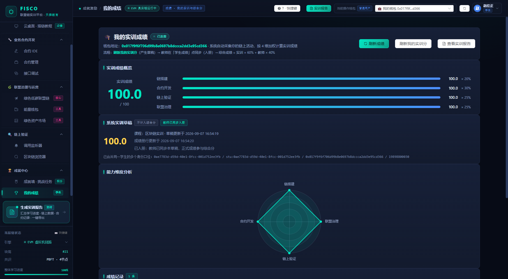
当前版本已把草稿与成绩册彻底分家：打开报告、刷新报告都不再往成绩册里写任何行， 成绩册唯一的系统写入通道是教师显式点“同步”。整条链路三段，每段都要有人按一次按钮：
成就页展示徽章墙与积分，并按阶段列出每日挑战（领取 → 完成 → 提交进度）。它不参与评分，但每一个成就都是一条"你确实做到了 X"的旁证。 实用用法：把未获得的成就当作待办清单，它们与九维评分项高度重叠。
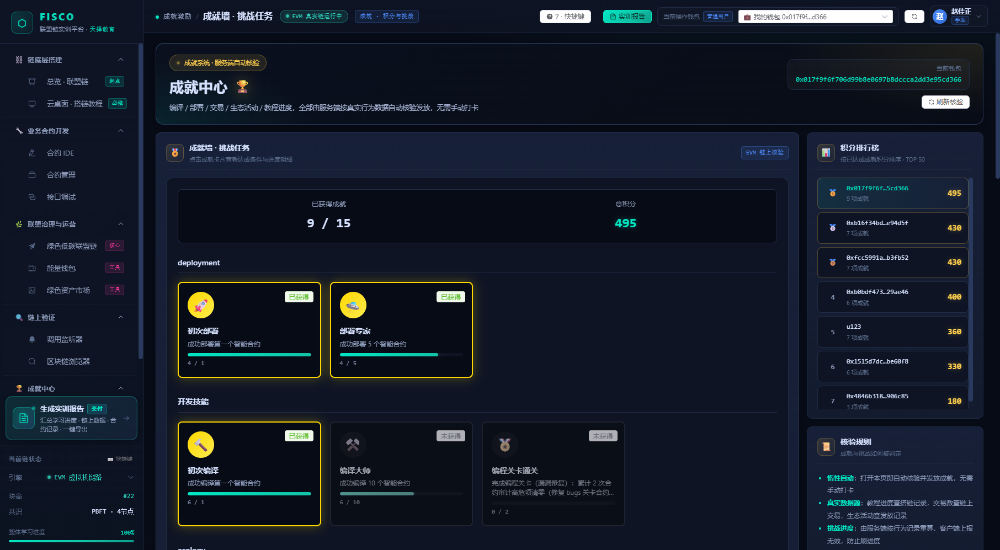
0x… 属正常。
按“登录 → 云桌面 → 链与合约 → 分数与成绩”四类排序，先对号再行动。
| 现象 | 原因与处理 |
|---|---|
| 登录失败，提示看不清原因 | 本版已把三类原因分开：提示实训 SSO 返回的原文（如“用户名或密码错误”）→ 账号密码问题；提示「SSO 登录接口 HTTP 4xx/5xx」→ 身份服务异常，把账号名 + 时间点报老师；提示「无法连接 SSO 服务」→ 平台到 SSO 的网络不通，等老师处理。三种都不要连续重试 |
| 登录后菜单里看不到某些页 | 角色权限不足。学生账号不包含教师端功能（如成绩录入、树种目录上架）属正常 |
| 总览页看不到任务卡 / 沙盘一直显示“待命” | 两者都是默认状态而非故障：任务卡要等你在云桌面把 10 步打完才切成微任务模式（见 7.7）；沙盘轮次必须由教师创建并启动（见 8.3） |
| 云桌面终端无法粘贴命令 | 为训练手写命令，终端故意屏蔽了 Ctrl+V。只能逐字输入；写错的命令直接回车产生失败记录即可，不影响后续 |
| 命令明明对了却不打勾 | 步骤按顺序正则匹配：必须先完成前一步。若顺序正确仍不通过，核对多余空格与参数（尤其地址大小写）；页面左侧步骤卡展开后的“语法格式”就是标准答案 |
| 顶栏链状态不是"链运行中" | 后端或链节点未就绪。先等 30 秒刷新；仍不行就通知老师，不要在此时做部署类操作（会留下一堆失败交易，影响监听器的异常统计） |
| 部署 / 发行报"权限不足" | ERC20 发行权仅在管理员钱包。检查顶栏是否切到了错误钱包；铸造 NFT 被 403 拦下则是没选联盟角色，回联盟页选角色即可（不扣 P 分） |
| 报告分数与"我的成绩"不一致 | 正常（两套体系）。以提交给老师的 Markdown 报告为准，算总评以成绩册为准（见第 11 章） |
| 侧边栏"整体学习进度"不变化 | 本版已接上真实进度（每 15 秒与切页时刷新）；但它只算搭链教程步数，不等于报告九维分。它长期不动时，先确认你确实在云桌面完成了步骤 |
| 不小心切了同学/内置的钱包 | 立即切回"我的钱包"再继续。切过去那一段数据归对方名下（同一候选集内的别名已能合并，跨账号不行），可补做一遍拿回分数 |
| 页面报错 / 班级与成绩列表空白 | 先刷新；成绩册为空通常是教师还没绑定班级、或未同步花名册（这两类现在都会显式提示），需老师按教师手册第 3 章处理，学生无法绕过 |
| 报告 100 分，综合分却只有 60 | 成绩册里没有教师分（或老师只同步了草稿未录入评分）。综合分 = 实训 × 0.6 + 教师 × 0.4，请老师完成第 11.3 节的第 3 步 |
联盟链：由已知成员（地铁/公交/单车等）共同治理的链。节点：运行链程序的服务器，本平台为 4 节点 PBFT。钱包：链上地址，形如 0x…；stu:<ID> 是你的平台别名。
智能合约：上链的程序。ERC20 同质化代币（能量）；ERC721 唯一证书；ERC1155 批量勋章。ABI：合约接口描述；bytecode：编译后的链上字节码。
交易哈希：一笔上链操作的唯一凭证。回执 Receipt：执行结果与状态。Gas：执行消耗。只读调用 view：不写链、不产生交易；写调用 state：产生交易。
九维 A~I：报告评分项（100 分）。P 项：扣分项，只统计联盟页操作日志，最多 −15。四维：成绩册的四个过程维度。实训分 / 教师分 / 综合分：60% / 40% / 合成结果。钱包候选集：判定“这些数据算不算你”的一组写法。
| ✓ | 检查项 | 目标 | 在哪确认 |
|---|---|---|---|
| □ | 云桌面 10 步全部打勾 | D = 10 | 云桌面顶部"已完成 x / 10 步" |
| □ | 三大标准合约已部署（本人部署） | A = 20 | 合约管理列表，部署者 = 我的钱包（候选集） |
| □ | 三份生态合约在链上齐全 | H = 5 | 联盟页合约状态 3/3（全局事实，不必自己部署） |
| □ | 读 3 份源码 + 编译成功 + 接口调试 | I = 5 | 合约 IDE 与接口调试页（只读函数调 1 次） |
| □ | 链上交易 ≥ 10 笔（含部署与转账） | B = 15 | 区块链浏览器地址页，与报告同口径 |
| □ | 铸造过 1 份资产且市场成交 1 笔 | C = 10 | 绿色资产市场成交记录（绿色市场成交也计入） |
| □ | 6 个联盟角色都切换并成功发放过 | E + F = 20 | 能量流水按角色筛，≥ 3 种角色有实质操作 |
| □ | 2 个不同树种证书 + 勋章 + 骑行券都兑换 | G = 15 | 兑换中心与我的资产（只有 1 个树种时 G1 仅 4 分，G 上限 11） |
| □ | 联盟页没有成堆的失败操作 | P 扣分 = 0 | 报告页扣分行 + 联盟页操作日志按本人筛 |
| □ | 报告已刷新并下载 Markdown | 总分 ≥ 90 | 报告页右上角（实测可 100） |
| □ | 草稿已同步且教师分不为空 | 教师已评 | 我的成绩（否则综合分最多只算到实训 × 60%） |
优先级 1 的四个动作（部署 / 教程 / I 项 / 看一眼 H）做完就跨过。
再加 6 角色发放与一轮兑换、P 项控在 0，就进「卓越 🏆」区间。
九维全满零扣分；唯一外因是树种目录得有 ≥ 2 个在售树种。